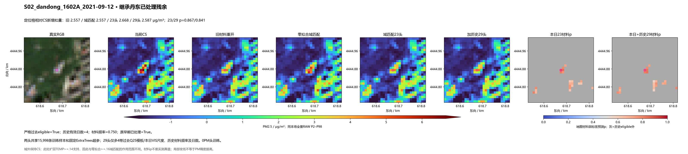
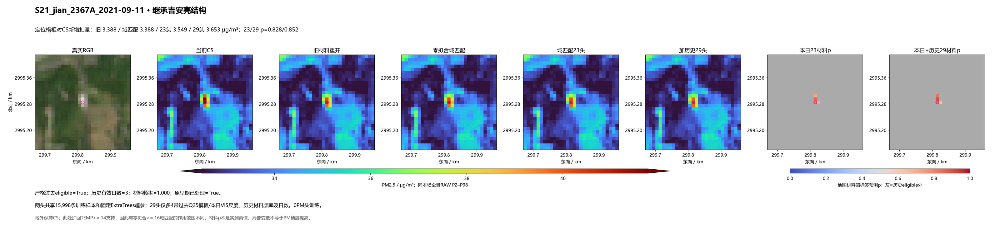
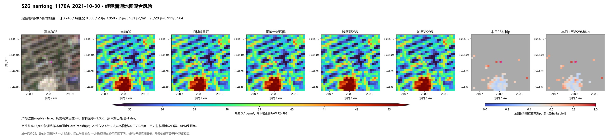
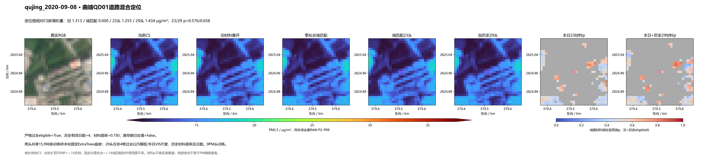
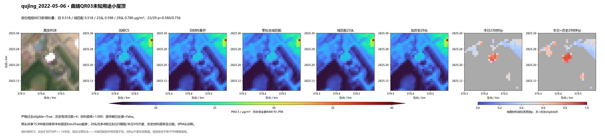
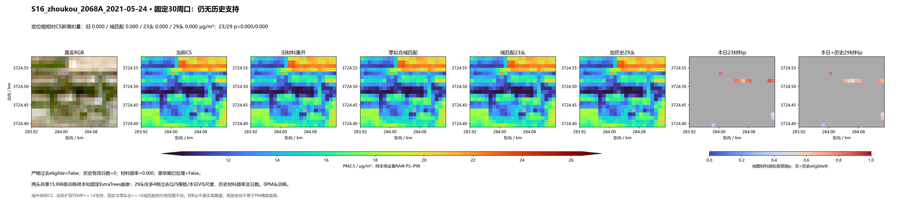
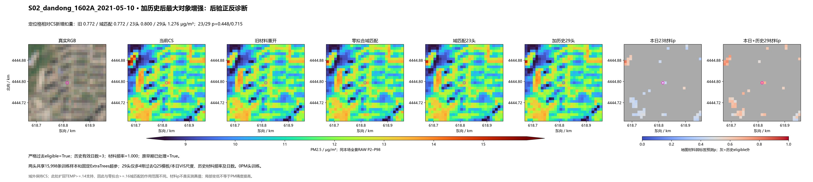
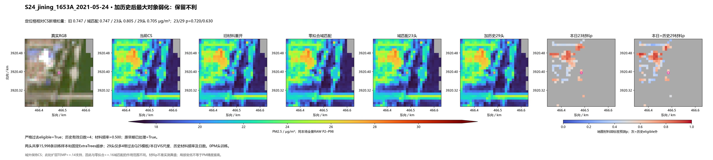

同15,998训练坐标、固定两个ExtraTrees辅助fit；206场两字段真实冻结PM推理。新增6个严格过去输入，与23特征做单一公平比较。未调强度或重训PM。
29 特征比同样训练样本的 23 特征保留了更多历史材料信息，也更强地降低部分亮点；同时地图混合道路的额外降低仍明显，正局地对比变负的对象从 15 增至 24。两新头作为并列实验保留，暂不替换默认方案。原固定 30 已按原坐标核定为 74 格。
结果与代价 · 固定合同 · 同支持方法对比 · 材料弱标签指标 · 坐标核定原30 · 共同支持事件对
新增6历史特征相对23头的定位格额外扣量 -0.08054 μg/m³。是否有利需同时看RGB和道路/屋顶身份。

新增6历史特征相对23头的定位格额外扣量 +0.10428 μg/m³。是否有利需同时看RGB和道路/屋顶身份。

新增6历史特征相对23头的定位格额外扣量 -0.02922 μg/m³。是否有利需同时看RGB和道路/屋顶身份。

新增6历史特征相对23头的定位格额外扣量 +0.17851 μg/m³。是否有利需同时看RGB和道路/屋顶身份。

新增6历史特征相对23头的定位格额外扣量 +0.18169 μg/m³。是否有利需同时看RGB和道路/屋顶身份。

新增6历史特征相对23头的定位格额外扣量 +0.00000 μg/m³。是否有利需同时看RGB和道路/屋顶身份。

新增6历史特征相对23头的定位格额外扣量 +0.47583 μg/m³。是否有利需同时看RGB和道路/屋顶身份。

新增6历史特征相对23头的定位格额外扣量 -0.10019 μg/m³。是否有利需同时看RGB和道路/屋顶身份。
